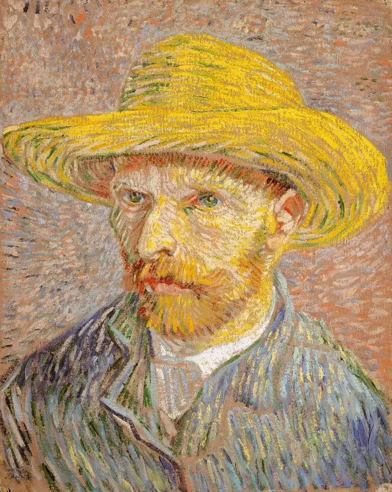
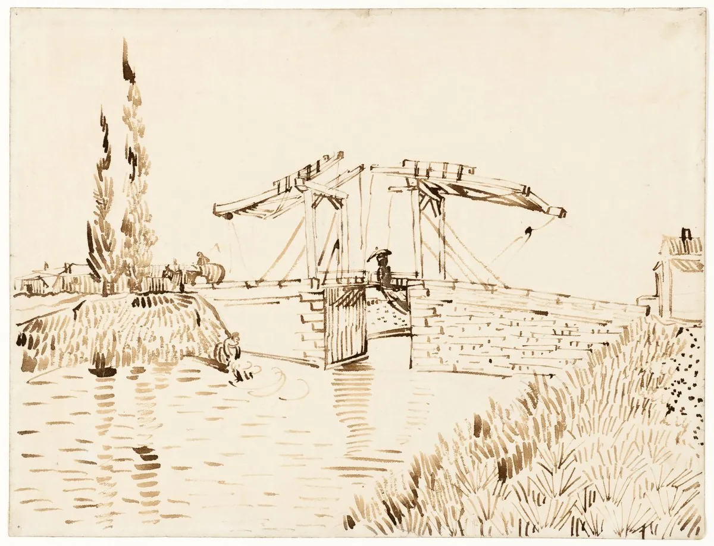
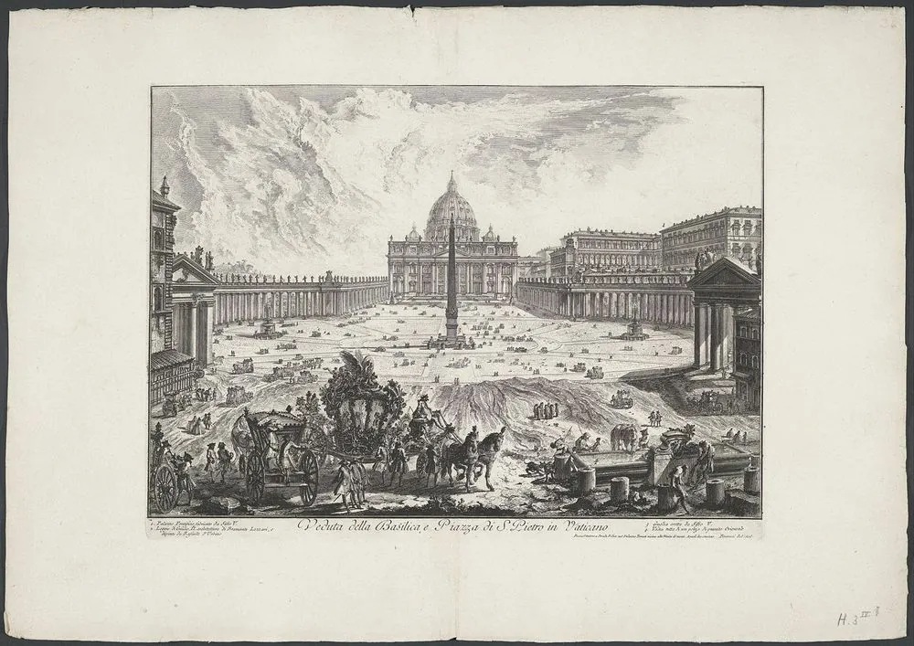
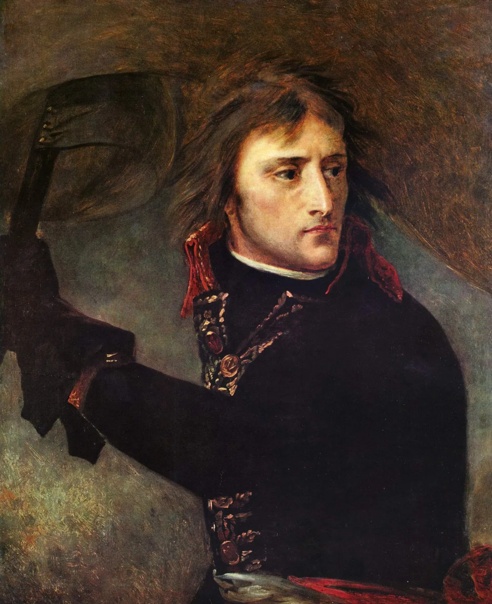
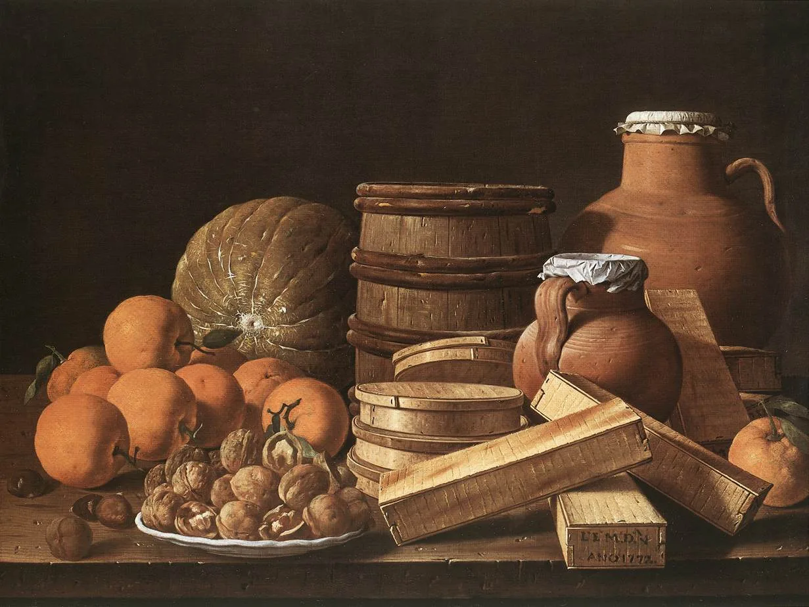
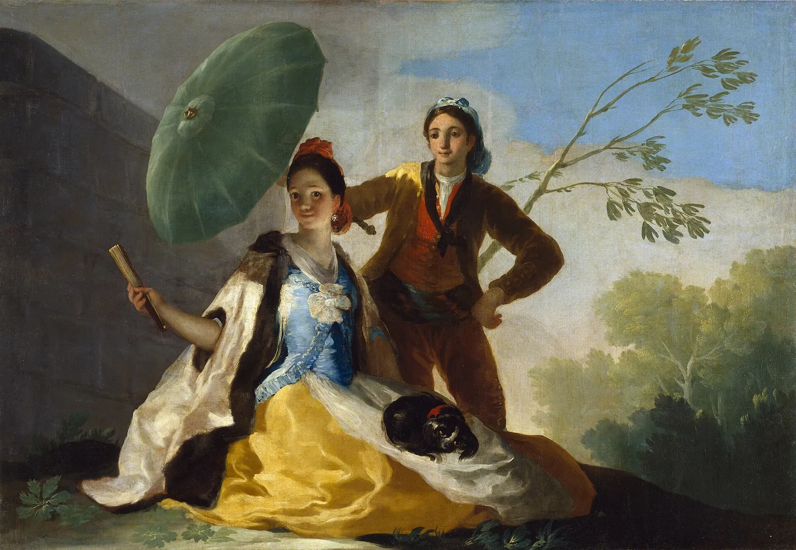

언어 미술관 · 맛보기 편지
작품마다 무료 장(I장)의 편지 3통: 원문 · 번역 · 그림 · 낭독 듣기. 아래 ‘앱에서 이어 읽기’ 로 앱에서 이어서 읽어요.
빈센트의 편지 · 빈센트 반 고흐

빈센트가 테오에게 · 1888년 2월 21일Mon cher Théo, durant le voyage j'ai pour le moins autant pensé à toi, qu'au nouveau pays …
사랑하는 테오에게. 오는 길에 나는 처음 보는 이 고장만큼이나 너를 많이 생각했어.

빈센트가 테오에게 · 1888년 3월 16일Pour ce qui est du travail, j'ai rapporté une toile de 15 aujourd'hui, c'est un pont-levis…
일 얘기를 하자면, 오늘 15호 캔버스를 하나 들고 왔어. 작은 마차가 건너는 도개교가 파란 하늘을 배경으로 서 있는 그림이야…
 빈센트가 테오에게 · 1888년 3월
빈센트가 테오에게 · 1888년 3월J'avais travaillé une toile de 20 en plein air dans un verger, un terrain lilas labouré, u…
과수원에 나가서 20호 캔버스를 하나 그렸어. 갈아 놓은 연보라 땅, 갈대 울타리, 그리고 눈부신 파랑과 흰빛 하늘을 배경으로…
모차르트의 편지 · 볼프강 아마데우스 모차르트
 볼프강이 누나에게 · 1770년 1월 26일
볼프강이 누나에게 · 1770년 1월 26일Mich freut es recht von ganzem Herzen, daß Du bei der Schlittenfahrt, von der Du mir schre…
누나가 편지에 쓴 썰매 타기가 그렇게 즐거웠다니 진심으로 기뻐. 누나한테 즐거울 일이 천 번은 더 생겨서, 평생 신나게 살면 …

볼프강이 엄마와 누나에게 · 1770년 4월 14일Ich bin, Gott Lob und Dank! nebst meiner miserablen Feder gesund und küsse die Mama und di…
하느님 덕분에 저는 이 엉터리 펜이랑 같이 잘 있어요. 엄마와 누나에게 천 번, 아니 1000번 입맞춤을 보내요.
 볼프강이 누나에게 · 1770년 5월 19일
볼프강이 누나에게 · 1770년 5월 19일Der 12te Menuett von Haydn, den Du mir geschickt hast, gefällt mir recht wohl, und den Baß…
누나가 보내 준 하이든의 열두 번째 미뉴에트, 아주 마음에 들어. 거기 붙인 베이스는 비할 데 없이 잘 지었고, 틀린 데도 하…
나폴레옹의 편지 · 나폴레옹 보나파르트

나폴레옹이 조제핀에게 · 1796년 4월 3일J'ai reçu toutes tes lettres, mais aucune n'a fait sur moi l'impression de ta dernière.
당신 편지는 다 받았어. 그런데 어느 편지도 이번 편지만큼 내 마음을 흔들지는 못했어.
 나폴레옹이 조제핀에게 · 1796년 4월 5일
나폴레옹이 조제핀에게 · 1796년 4월 5일Il est une heure après minuit. L'on m'apporte une lettre ; elle est triste, mon âme en est…
새벽 한 시야. 편지가 한 통 왔어. 슬픈 편지라 마음이 무너져. 쇼베가 세상을 떠났대.

나폴레옹이 조제핀에게 · 1796년 4월 7일Je reçois une lettre que tu interromps pour aller, dis-tu, à la campagne ; et après cela t…
편지를 받았는데, 시골에 간다면서 쓰다 말았더라. 그러고는 나를 질투하는 척까지 하네. 나는 여기서 일과 피로에 짓눌려 있는데…
고야의 편지 · 프란시스코 데 고야
 고야가 마르틴 사파테르에게 · 1775년 9월 6일
고야가 마르틴 사파테르에게 · 1775년 9월 6일Me alegro que te diviertas y que visites a Francisco.
네가 즐겁게 지내고 프란시스코를 찾아가 준다니 기뻐.

고야가 마르틴 사파테르에게 · 1777년 4월Infinitas gracias, y muchas más, por las expresiones de amistad que te merezco, y no dudes…
네가 보내 준 우정의 말에 끝없이 고마워. 누군가를 귀찮게 해야 한다면 그건 너일 거야. 의심하지 마.
 고야가 코르넬리오 반데르고텐에게 · 1778년 10월 26일
고야가 코르넬리오 반데르고텐에게 · 1778년 10월 26일Sr. D. Cornelio Vandergoten: De orden del señor don Francisco Sabatini se servirá vuestra …
코르넬리오 반데르고텐 님께. 프란시스코 사바티니 님의 지시에 따라, 제 손으로 그린 그림 〈기타를 치는 눈먼 사람과 그를 듣는…